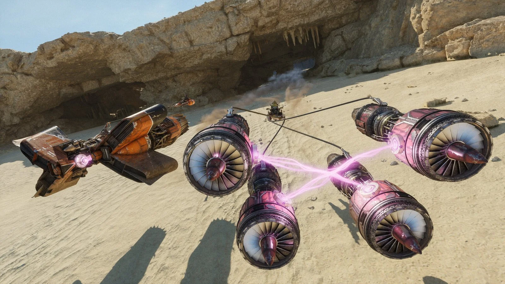

Star Wars a quasi 50 anni di distanza dall'uscita del primo film ha ancora tante cosa da raccontare, o per lo meno da far giocare. Star Wars Galactic Racer è il nuovo videogioco basato sull'iconica serie cinematografica creata da George Lucas che ci porta a prendere parte della competizione più spericolata di tutto Guerre Stellari: il Pod racing. Galactic Racer è un arcade racing game dove vige una sola regola: non ci sono regole. Velocità folli, curve al limite della fisica, precisione millimetricà, insomma, tutto quello che ci si può aspettare da gare intergalattiche a bordo degli iconici sgusci. Ma queste non sono semplici gare, ma vere e prioprie sfide di sopravvivenza, dove speronamenti e esplosioni sono all'ordine del giorno. I circuiti sono distribuiti su vari pianeti, ognuno con le sue peculiarità, scorciatoie e meccaniche da imparare.


